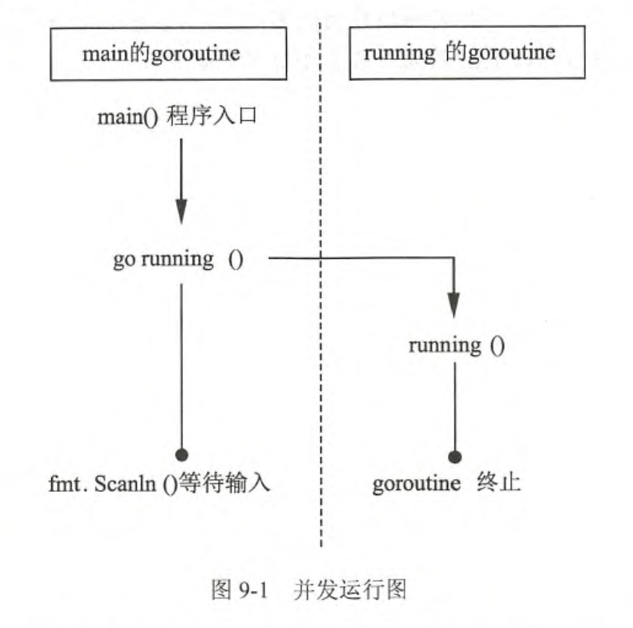

第九章 并发
并发指在同一时间内可以执行多个任务。并发编程含义比较广泛，包含多线程编程、多进程编程以及分布式编程等。本章讲解的并发含义属于多线程编程。
Go语言通过编译器运行时（runtime），从语义上支持了并发的特性。Go语言的并发通过 goroutine 特性完成。 goroutine 类似于线程，但是可以根据需要创建多个 gouroutine 并发工作。 goroutine 是由 Go 语言的运行时调度完成， 而线程是由操作系统调度完成。
Go 语言还提供了 channel 数据类型在多个 gouroutine 间进行通信。 gouroutine 和 channel 是 Go 语言秉承的 CSP（Communicating Sequential Process）并发模式的重要实现基础。本章中将详细为大家讲解 goroutine 和 channel 以及相关特性。
9.1 轻量级线程（goroutine）——根据需要随时创建“线程”
goroutine 的概念类似于线程， 但 goroutine 由 Go 程序的运行时调度和管理。Go 程序会智能地将 goroutine 中的任务合理地分配给每个CPU。
事实上，Go 程序从 main 包的 main() 函数开始， 在程序启动时， Go 程序就会为 main() 函数创建一个默认的 goroutine。
9.1.1 使用普通函数创建 gouroutine
Go 程序中使用 go 关键字为一个函数创建一个 goroutine。一个函数可以被创建多个 goroutine ， 一个 goroutine 必定对应一个函数。
1. 格式
为一个普通函数创建 goroutine 的写法如下：
go 函数名（参数列表）
- 函数名： 要调用的函数名。
- 参数列表： 调用函数需要传入的参数列表。
使用 go 关键字创建 goroutine 时， 被调用函数的返回值会被忽略。
提示⚠️：如果需要在 goroutine 中返回数据， 请使用 9.2 节较少的通道（channel）特性，通过通道把数据从 goroutine 中作为返回值传出。
2. 例子
使用 go 关键字，将 runing() 函数并发执行，每隔一秒打印一次计数器，而 main 的 goroutine 则等待客户输入， 两个行为可以同时进行。请参考以下代码：
package main
import(
"fmt"
"time"
)
func running() {
var times int
// 构建一个无限循环
for {
times++
fmt.Println("tick", times)
// 延时一秒
time.Sleep(time.Second)
}
}
func main() {
// 开启一个 goroutine 运行 running 函数
go running()
// 同时在 main 函数这个本身就在默认的 goroutine 里运行的函数里
// 等待用户输入一个字符。
// 只要用户输入任意字符，main 函数所在的 goroutine 停止运行
// 于此同时，在这个 goroutine 里面创建的 goroutine 也会随之停止。
var input string
fmt.Scanln(&input)
}
这段代码的执行顺序如图 9-1 所示。

9.1.2 使用匿名函数创建 goroutine
go 关键字后也可以为匿名函数或闭包启动 goroutine
1. 使用匿名函数创建 goroutine 格式
go func(参数列表) {
函数体
}（调用参数列表）
- 参数列表： 函数体内的参数变量列表
- 函数体：匿名函数代码。
- 调用参数列表：启动 goroutine 时， 需要向匿名函数传递的调用参数。
2. 使用匿名函数创建 goroutine 的例子
参见以下代码：
package main
import (
"fmt"
"time"
)
func main() {
// 没有函数名直接用 go 关键字 ➕函数声明关键字
// 创建了无参数函数的 goroutine
// 函数体和上面 9.1.1 的例子一样
// 在函数体的最后添加了 （） 来启动这个 goroutine
go func() {
var times int
for {
times++
fmt.Println("tick", times)
time.Sleep(time.Second)
}
}()
var input string
fmt.Scanln(&input)
}
提示⚠️：所有 goroutine 在
main()函数结束时会一同结束。goroutine 从调度性能角度来说没有线程细致，而细致程度取决于 Go 程序的 gouroutine 调度器的实现和运行环境。
终止 goroutine 的最好方法就是自然返回 goroutine 对应的函数。 虽然可以用
golang.org/x/net/context包进行 goroutine 生命周期深度控制， 但这种方法仍然处于内部试验阶段， 并不是官方推荐的特性。截止 Go 1.9 版本， 暂时没有标准接口获取 goroutine 的 ID。
9.1.3 调整并发的运行性能（GOMAXPROCS）
在 Go 程序运行时（runtime） 实现了一个小型的任务调度器。这套调度器的工作原理类似于操作系统调度线程， Go 程序调度器可以高效地将 CPU 资源分配给每一个任务。传统逻辑中， 开发这需要维护线程池中线程于 CPU 核心数量的对应关系。 同样的，Go 程序中也可以通过 runtime.GOMAXPROCS() 函数做到，格式如下：
runtime.GOMAXPROCS(逻辑 CPU 数量)
这里的逻辑 CPU 数量可以有以下几种数值：
- < 1: 不修改任何数值。
- = 1: 单核心执行。
- > 1: 多核心并发执行。
一般情况下使用以下语句：
// runtime.NumCPU() 是查询 CPU 核心数
runtime.GOMAXPROCS(runtime.NumCPU())
提示⚠️： Go 1.5 版本之前，默认使用的是单核心执行。从 Go 1.5 版本开始，默认执行上面的语句以便让代码多核并发执行，最大效率地利用 CPU。
这里也看出 GOMAXPROCS 其实是一个变量，在 Go 程序启动前将这个值设置成环境变量也是起相同作用的。
9.1.4 理解并发和并行
- 并发（concurrency）：把任务在不同的时间点交给处理器进行处理。在同一时间点，任务并不会同时运行。
- 并行（parallelism）：把每一个任务分配给每一个处理器独立完成。在同一时间点，任务一定是同时运行。
我的理解是 单核是并发。多核是并行。
单纯英文解释的比较不容易混淆：
- concurrency 连接起来的流动的样子，只有一条线。
- parallelism 平行线型的样子，明显有多条线。
9.1.5 Go 语言的 协作程序（goroutine） 和普通的协作程序（coroutine）
C#、Lua、Python 语言都支持 coroutine 特性。coroutine 与 goroutine 在名字上类似，都可以将函数或者语句在独立的环境中运行，但是他们之间有两点不同：
goroutine 可能发生并行执行；但 coroutine 始终顺序执行的 concurrency。
goroutine 间使用 channel 通信； coroutine 使用 yield 和 resume 操作。
说明1： 狭义地说， goroutine 可能发生在多线程环境下，goroutine 无法控制自己获取高优先度支持； coroutine 始终发生在单线程，coroutine 程序需要主动交出控制权， 宿主才能获得控制权并将控制权交给其他 coroutine。
说明2: goroutine 和 coroutine 的概念和运行机制都是脱胎于早期的操作系统。
coroutine 的运行机制属于 协作式任务处理，早期的操作系统要求每一个应用必须遵守操作系统的任务处理规则，应用程序在不需要使用 CPU 时，会主动交出 CPU 使用权。如果开发者无意间或者故意让应用程序长时间占用 CPU， 操作系统也无能为力， 表现出来的效果就是计算机很容易失去相应或者死机。
goroutine 属于抢占式任务处理，已经和现有的多线程和多进程任务处理非常类似。应用程序对 CPU 的控制最终还需要又操作系统来管理，操作系统如果发现一个应用程序长时间大量地占用 CPU， 那么用户有权终止这个任务。